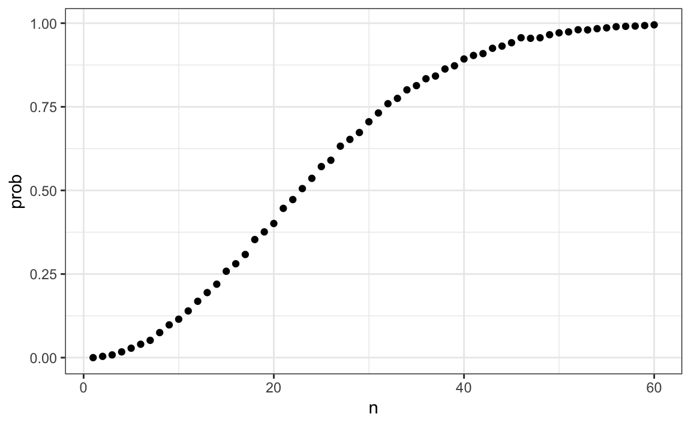
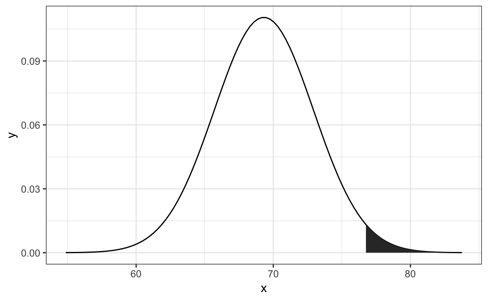

Chapter 14 Probability
In games of chance, probability has a very intuitive definition. For instance, we know what it means that the chance of a pair of dice coming up seven is 1 in 6. However, this is not the case in other contexts. Today probability theory is being used much more broadly with the word probability commonly used in everyday language. Google’s auto-complete of “What are the chances of†give us: “having twins”, “rain today”, “getting struck by lightning”, and “getting cancer”. One of the goals of this part of the book is to help us understand how probability is useful to understand and describe real-world events when performing data analysis.
Because knowing how to compute probabilities gives you an edge in games of chance, throughout history many smart individuals, including famous mathematicians such as Cardano, Fermat, and Pascal, spent time and energy thinking through the math of these games. As a result, Probability Theory was born. Probability continues to be highly useful in modern games of chance. For example, in poker, we can compute the probability of winning a hand based on the cards on the table. Also, casinos rely on probability theory to develop games that almost certainly guarantee a profit.
Probability theory is useful in many other contexts and, in particular, in areas that depend on data affected by chance in some way. All of the other chapters in this part build upon probability theory. Knowledge of probability is therefore indispensable for data science.
14.1 Discrete probability
We start by covering some basic principles related to categorical data. The subset of probability is referred to as discrete probability. It will help us understand the probability theory we will later introduce for numeric and continuous data, which is much more common in data science applications. Discrete probability is more useful in card games and therefore we use these as examples.
14.1.1 Relative frequency
The word probability is used in everyday language. Answering questions about probability is often hard, if not impossible. Here we discuss a mathematical definition of probability that does permit us to give precise answers to certain questions.
For example, if I have 2 red beads and 3 blue beads inside an urn48 (most probability books use this archaic term, so we do too) and I pick one at random, what is the probability of picking a red one? Our intuition tells us that the answer is 2/5 or 40%. A precise definition can be given by noting that there are five possible outcomes of which two satisfy the condition necessary for the event “pick a red bead”. Since each of the five outcomes has the same chance of occurring, we conclude that the probability is .4 for red and .6 for blue.
A more tangible way to think about the probability of an event is as the proportion of times the event occurs when we repeat the experiment an infinite number of times, independently, and under the same conditions.
14.1.2 Notation
We use the notation \(\mbox{Pr}(A)\) to denote the probability of event \(A\) happening. We use the very general term event to refer to things that can happen when something occurs by chance. In our previous example, the event was “picking a red bead”. In a political poll in which we call 100 likely voters at random, an example of an event is “calling 48 Democrats and 52 Republicans”.
In data science applications, we will often deal with continuous variables. These events will often be things like “is this person taller than 6 feet”. In this case, we write events in a more mathematical form: \(X \geq 6\). We will see more of these examples later. Here we focus on categorical data.
14.1.3 Probability distributions
If we know the relative frequency of the different categories, defining a distribution for categorical outcomes is relatively straightforward. We simply assign a probability to each category. In cases that can be thought of as beads in an urn, for each bead type, their proportion defines the distribution.
If we are randomly calling likely voters from a population that is 44% Democrat, 44% Republican, 10% undecided, and 2% Green Party, these proportions define the probability for each group. The probability distribution is:
| Pr(picking a Republican) | = | 0.44 |
| Pr(picking a Democrat) | = | 0.44 |
| Pr(picking an undecided) | = | 0.10 |
| Pr(picking a Green) | = | 0.02 |
14.2 Monte Carlo simulations for categorical data
Computers provide a way to actually perform the simple random experiment described above: pick a bead at random from a bag that contains three blue beads and two red ones. Random number generators permit us to mimic the process of picking at random.
An example is the sample function in R. We demonstrate its use in the code below. First, we use the function rep to generate the urn:
beads <- rep(c("red", "blue"), times = c(2,3))
beads
#> [1] "red" "red" "blue" "blue" "blue"and then use sample to pick a bead at random:
sample(beads, 1)
#> [1] "red"This line of code produces one random outcome. We want to repeat this experiment an infinite number of times, but it is impossible to repeat forever. Instead, we repeat the experiment a large enough number of times to make the results practically equivalent to repeating forever. This is an example of a Monte Carlo simulation.
Much of what mathematical and theoretical statisticians study, which we do not cover in this book, relates to providing rigorous definitions of “practically equivalent†as well as studying how close a large number of experiments gets us to what happens in the limit. Later in this section, we provide a practical approach to deciding what is “large enough”.
To perform our first Monte Carlo simulation, we use the replicate function, which permits us to repeat the same task any number of times. Here, we repeat the random event \(B =\) 10,000 times:
B <- 10000
events <- replicate(B, sample(beads, 1))We can now see if our definition actually is in agreement with this Monte Carlo simulation approximation. We can use table to see the distribution:
tab <- table(events)
tab
#> events
#> blue red
#> 6034 3966and prop.table gives us the proportions:
prop.table(tab)
#> events
#> blue red
#> 0.603 0.397The numbers above are the estimated probabilities provided by this Monte Carlo simulation. Statistical theory, not covered here, tells us that as \(B\) gets larger, the estimates get closer to 3/5=.6 and 2/5=.4.
Although this is a simple and not very useful example, we will use Monte Carlo simulations to estimate probabilities in cases in which it is harder to compute the exact ones. Before delving into more complex examples, we use simple ones to demonstrate the computing tools available in R.
14.2.1 Setting the random seed
Before we continue, we will briefly explain the following important line of code:
set.seed(1986) Throughout this book, we use random number generators. This implies that many of the results presented can actually change by chance, which then suggests that a frozen version of the book may show a different result than what you obtain when you try to code as shown in the book. This is actually fine since the results are random and change from time to time. However, if you want to ensure that results are exactly the same every time you run them, you can set R’s random number generation seed to a specific number. Above we set it to 1986. We want to avoid using the same seed everytime. A popular way to pick the seed is the year - month - day. For example, we picked 1986 on December 20, 2018: \(2018 - 12 - 20 = 1986\).
You can learn more about setting the seed by looking at the documentation:
?set.seedIn the exercises, we may ask you to set the seed to assure that the results you obtain are exactly what we expect them to be.
14.2.2 With and without replacement
The function sample has an argument that permits us to pick more than one element from the urn. However, by default, this selection occurs without replacement: after a bead is selected, it is not put back in the bag. Notice what happens when we ask to randomly select five beads:
sample(beads, 5)
#> [1] "red" "blue" "blue" "blue" "red"
sample(beads, 5)
#> [1] "red" "red" "blue" "blue" "blue"
sample(beads, 5)
#> [1] "blue" "red" "blue" "red" "blue"This results in rearrangements that always have three blue and two red beads. If we ask that six beads be selected, we get an error:
sample(beads, 6)Error in sample.int(length(x), size, replace, prob) : cannot take a sample larger than the population when 'replace = FALSE'
However, the sample function can be used directly, without the use of replicate, to repeat the same experiment of picking 1 out of the 5 beads, continually, under the same conditions. To do this, we sample with replacement: return the bead back to the urn after selecting it.
We can tell sample to do this by changing the replace argument, which defaults to FALSE, to replace = TRUE:
events <- sample(beads, B, replace = TRUE)
prop.table(table(events))
#> events
#> blue red
#> 0.602 0.398Not surprisingly, we get results very similar to those previously obtained with replicate.
14.3 Independence
We say two events are independent if the outcome of one does not affect the other. The classic example is coin tosses. Every time we toss a fair coin, the probability of seeing heads is 1/2 regardless of what previous tosses have revealed. The same is true when we pick beads from an urn with replacement. In the example above, the probability of red is 0.40 regardless of previous draws.
Many examples of events that are not independent come from card games. When we deal the first card, the probability of getting a King is 1/13 since there are thirteen possibilities: Ace, Deuce, Three, \(\dots\), Ten, Jack, Queen, King, and Ace. Now if we deal a King for the first card, and don’t replace it into the deck, the probabilities of a second card being a King is less because there are only three Kings left: the probability is 3 out of 51. These events are therefore not independent: the first outcome affected the next one.
To see an extreme case of non-independent events, consider our example of drawing five beads at random without replacement:
x <- sample(beads, 5)If you have to guess the color of the first bead, you will predict blue since blue has a 60% chance. But if I show you the result of the last four outcomes:
x[2:5]
#> [1] "blue" "blue" "blue" "red"would you still guess blue? Of course not. Now you know that the probability of red is 1 since the only bead left is red. The events are not independent, so the probabilities change.
14.4 Conditional probabilities
When events are not independent, conditional probabilities are useful. We already saw an example of a conditional probability: we computed the probability that a second dealt card is a King given that the first was a King. In probability, we use the following notation:
\[ \mbox{Pr}(\mbox{Card 2 is a king} \mid \mbox{Card 1 is a king}) = 3/51 \]
We use the \(\mid\) as shorthand for “given that†or “conditional on”.
When two events, say \(A\) and \(B\), are independent, we have:
\[ \mbox{Pr}(A \mid B) = \mbox{Pr}(A) \]
This is the mathematical way of saying: the fact that \(B\) happened does not affect the probability of \(A\) happening. In fact, this can be considered the mathematical definition of independence.
14.5 Addition and multiplication rules
14.5.1 Multiplication rule
If we want to know the probability of two events, say \(A\) and \(B\), occurring, we can use the multiplication rule:
\[ \mbox{Pr}(A \mbox{ and } B) = \mbox{Pr}(A)\mbox{Pr}(B \mid A) \] Let’s use Blackjack as an example. In Blackjack, you are assigned two random cards. After you see what you have, you can ask for more. The goal is to get closer to 21 than the dealer, without going over. Face cards are worth 10 points and Aces are worth 11 or 1 (you choose).
So, in a Blackjack game, to calculate the chances of getting a 21 by drawing an Ace and then a face card, we compute the probability of the first being an Ace and multiply by the probability of drawing a face card or a 10 given that the first was an Ace: \(1/13 \times 16/51 \approx 0.025\)
The multiplication rule also applies to more than two events. We can use induction to expand for more events:
\[ \mbox{Pr}(A \mbox{ and } B \mbox{ and } C) = \mbox{Pr}(A)\mbox{Pr}(B \mid A)\mbox{Pr}(C \mid A \mbox{ and } B) \]
14.5.2 Multiplication rule under independence
When we have independent events, then the multiplication rule becomes simpler:
\[ \mbox{Pr}(A \mbox{ and } B \mbox{ and } C) = \mbox{Pr}(A)\mbox{Pr}(B)\mbox{Pr}(C) \]
But we have to be very careful before using this since assuming independence can result in very different and incorrect probability calculations when we don’t actually have independence.
As an example, imagine a court case in which the suspect was described as having a mustache and a beard. The defendant has a mustache and a beard and the prosecution brings in an “expert†to testify that 1/10 men have beards and 1/5 have mustaches, so using the multiplication rule we conclude that only \(1/10 \times 1/5\) or 0.02 have both.
But to multiply like this we need to assume independence! Say the conditional probability of a man having a mustache conditional on him having a beard is .95. So the correct calculation probability is much higher: \(1/10 \times 95/100 = 0.095\).
The multiplication rule also gives us a general formula for computing conditional probabilities:
\[ \mbox{Pr}(B \mid A) = \frac{\mbox{Pr}(A \mbox{ and } B)}{ \mbox{Pr}(A)} \]
To illustrate how we use these formulas and concepts in practice, we will use several examples related to card games.
14.5.3 Addition rule
The addition rule tells us that:
\[ \mbox{Pr}(A \mbox{ or } B) = \mbox{Pr}(A) + \mbox{Pr}(B) - \mbox{Pr}(A \mbox{ and } B) \]
This rule is intuitive: think of a Venn diagram. If we simply add the probabilities, we count the intersection twice so we need to substract one instance.

14.6 Combinations and permutations
In our very first example, we imagined an urn with five beads. As a reminder, to compute the probability distribution of one draw, we simply listed out all the possibilities. There were 5 and so then, for each event, we counted how many of these possibilities were associated with the event. The resulting probability of choosing a blue bead is 3/5 because out of the five possible outcomes, three were blue.
For more complicated cases, the computations are not as straightforward. For instance, what is the probability that if I draw five cards without replacement, I get all cards of the same suit, what is known as a “flush†in poker? In a discrete probability course you learn theory on how to make these computations. Here we focus on how to use R code to compute the answers.
First, let’s construct a deck of cards. For this, we will use the expand.grid and paste functions. We use paste to create strings by joining smaller strings. To do this, we take the number and suit of a card and create the card name like this:
number <- "Three"
suit <- "Hearts"
paste(number, suit)
#> [1] "Three Hearts"paste also works on pairs of vectors performing the operation element-wise:
paste(letters[1:5], as.character(1:5))
#> [1] "a 1" "b 2" "c 3" "d 4" "e 5"The function expand.grid gives us all the combinations of entries of two vectors. For example, if you have blue and black pants and white, grey, and plaid shirts, all your combinations are:
expand.grid(pants = c("blue", "black"), shirt = c("white", "grey", "plaid"))
#> pants shirt
#> 1 blue white
#> 2 black white
#> 3 blue grey
#> 4 black grey
#> 5 blue plaid
#> 6 black plaidHere is how we generate a deck of cards:
suits <- c("Diamonds", "Clubs", "Hearts", "Spades")
numbers <- c("Ace", "Deuce", "Three", "Four", "Five", "Six", "Seven",
"Eight", "Nine", "Ten", "Jack", "Queen", "King")
deck <- expand.grid(number=numbers, suit=suits)
deck <- paste(deck$number, deck$suit)With the deck constructed, we can double check that the probability of a King in the first card is 1/13 by computing the proportion of possible outcomes that satisfy our condition:
kings <- paste("King", suits)
mean(deck %in% kings)
#> [1] 0.0769Now, how about the conditional probability of the second card being a King given that the first was a King? Earlier, we deduced that if one King is already out of the deck and there are 51 left, then this probability is 3/51. Let’s confirm by listing out all possible outcomes.
To do this, we can use the permutations function from the gtools package. For any list of size n, this function computes all the different combinations we can get when we select r items. Here are all the ways we can choose two numbers from a list consisting of 1,2,3:
library(gtools)
permutations(3, 2)
#> [,1] [,2]
#> [1,] 1 2
#> [2,] 1 3
#> [3,] 2 1
#> [4,] 2 3
#> [5,] 3 1
#> [6,] 3 2Notice that the order matters here: 3,1 is different than 1,3. Also, note that (1,1), (2,2), and (3,3) do not appear because once we pick a number, it can’t appear again.
Optionally, we can add a vector. If you want to see five random seven digit phone numbers out of all possible phone numbers (without repeats), you can type:
all_phone_numbers <- permutations(10, 7, v = 0:9)
n <- nrow(all_phone_numbers)
index <- sample(n, 5)
all_phone_numbers[index,]
#> [,1] [,2] [,3] [,4] [,5] [,6] [,7]
#> [1,] 1 3 8 0 6 7 5
#> [2,] 2 9 1 6 4 8 0
#> [3,] 5 1 6 0 9 8 2
#> [4,] 7 4 6 0 2 8 1
#> [5,] 4 6 5 9 2 8 0Instead of using the numbers 1 through 10, the default, it uses what we provided through v: the digits 0 through 9.
To compute all possible ways we can choose two cards when the order matters, we type:
hands <- permutations(52, 2, v = deck)This is a matrix with two columns and 2652 rows. With a matrix we can get the first and second cards like this:
first_card <- hands[,1]
second_card <- hands[,2]Now the cases for which the first hand was a King can be computed like this:
kings <- paste("King", suits)
sum(first_card %in% kings)
#> [1] 204To get the conditional probability, we compute what fraction of these have a King in the second card:
sum(first_card%in%kings & second_card%in%kings) / sum(first_card%in%kings)
#> [1] 0.0588which is exactly 3/51, as we had already deduced. Notice that the code above is equivalent to:
mean(first_card%in%kings & second_card%in%kings) / mean(first_card%in%kings)
#> [1] 0.0588which uses mean instead of sum and is an R version of:
\[ \frac{\mbox{Pr}(A \mbox{ and } B)}{ \mbox{Pr}(A)} \]
How about if the order doesn’t matter? For example, in Blackjack if you get an Ace and a face card in the first draw, it is called a Natural 21 and you win automatically. If we wanted to compute the probability of this happening, we would enumerate the combinations, not the permutations, since the order does not matter.
combinations(3,2)
#> [,1] [,2]
#> [1,] 1 2
#> [2,] 1 3
#> [3,] 2 3In the second line, the outcome does not include (2,1) because (1,2) already was enumerated. The same applies to (3,1) and (3,2).
So to compute the probability of a Natural 21 in Blackjack, we can do this:
aces <- paste("Ace", suits)
facecard <- c("King", "Queen", "Jack", "Ten")
facecard <- expand.grid(number = facecard, suit = suits)
facecard <- paste(facecard$number, facecard$suit)
hands <- combinations(52, 2, v = deck)
mean(hands[,1] %in% aces & hands[,2] %in% facecard)
#> [1] 0.0483In the last line, we assume the Ace comes first. This is only because we know the way combination enumerates possibilities and it will list this case first. But to be safe, we could have written this and produced the same answer:
mean((hands[,1] %in% aces & hands[,2] %in% facecard) |
(hands[,2] %in% aces & hands[,1] %in% facecard))
#> [1] 0.048314.6.1 Monte Carlo example
Instead of using combinations to deduce the exact probability of a Natural 21, we can use a Monte Carlo to estimate this probability. In this case, we draw two cards over and over and keep track of how many 21s we get. We can use the function sample to draw two cards without replacements:
hand <- sample(deck, 2)
hand
#> [1] "Queen Clubs" "Seven Spades"And then check if one card is an Ace and the other a face card or a 10. Going forward, we include 10 when we say face card. Now we need to check both possibilities:
(hands[1] %in% aces & hands[2] %in% facecard) |
(hands[2] %in% aces & hands[1] %in% facecard)
#> [1] FALSEIf we repeat this 10,000 times, we get a very good approximation of the probability of a Natural 21.
Let’s start by writing a function that draws a hand and returns TRUE if we get a 21. The function does not need any arguments because it uses objects defined in the global environment.
blackjack <- function(){
hand <- sample(deck, 2)
(hand[1] %in% aces & hand[2] %in% facecard) |
(hand[2] %in% aces & hand[1] %in% facecard)
}Here we do have to check both possibilities: Ace first or Ace second because we are not using the combinations function. The function returns TRUE if we get a 21 and FALSE otherwise:
blackjack()
#> [1] FALSENow we can play this game, say, 10,000 times:
B <- 10000
results <- replicate(B, blackjack())
mean(results)
#> [1] 0.047514.7 Examples
In this section, we describe two discrete probability popular examples: the Monty Hall problem and the birthday problem. We use R to help illustrate the mathematical concepts.
14.7.1 Monty Hall problem
In the 1970s, there was a game show called “Let’s Make a Deal†and Monty Hall was the host. At some point in the game, contestants were asked to pick one of three doors. Behind one door there was a prize. The other doors had a goat behind them to show the contestant they had lost. After the contestant picked a door, before revealing whether the chosen door contained a prize, Monty Hall would open one of the two remaining doors and show the contestant there was no prize behind that door. Then he would ask “Do you want to switch doors?†What would you do?
We can use probability to show that if you stick with the original door choice, your chances of winning a prize remain 1 in 3. However, if you switch to the other door, your chances of winning double to 2 in 3! This seems counterintuitive. Many people incorrectly think both chances are 1 in 2 since you are choosing between 2 options. You can watch a detailed mathematical explanation on Khan Academy49 or read one on Wikipedia50. Below we use a Monte Carlo simulation to see which strategy is better. Note that this code is written longer than it should be for pedagogical purposes.
Let’s start with the stick strategy:
B <- 10000
monty_hall <- function(strategy){
doors <- as.character(1:3)
prize <- sample(c("car", "goat", "goat"))
prize_door <- doors[prize == "car"]
my_pick <- sample(doors, 1)
show <- sample(doors[!doors %in% c(my_pick, prize_door)],1)
stick <- my_pick
stick == prize_door
switch <- doors[!doors%in%c(my_pick, show)]
choice <- ifelse(strategy == "stick", stick, switch)
choice == prize_door
}
stick <- replicate(B, monty_hall("stick"))
mean(stick)
#> [1] 0.342
switch <- replicate(B, monty_hall("switch"))
mean(switch)
#> [1] 0.668As we write the code, we note that the lines starting with my_pick and show have no influence on the last logical operation when we stick to our original choice anyway. From this we should realize that the chance is 1 in 3, what we began with. When we switch,
the Monte Carlo estimate confirms the 2/3 calculation. This helps us gain some insight by showing that we are removing a door, show, that is definitely not a winner from our choices. We also see that unless we get it right when we first pick, you win: 1 - 1/3 = 2/3.
14.7.2 Birthday problem
Suppose you are in a classroom with 50 people. If we assume this is a randomly selected group of 50 people, what is the chance that at least two people have the same birthday? Although it is somewhat advanced, we can deduce this mathematically. We will do this later. Here we use a Monte Carlo simulation. For simplicity, we assume nobody was born on February 29. This actually doesn’t change the answer much.
First, note that birthdays can be represented as numbers between 1 and 365, so a sample of 50 birthdays can be obtained like this:
n <- 50
bdays <- sample(1:365, n, replace = TRUE)To check if in this particular set of 50 people we have at least two with the same birthday, we can use the function duplicated, which returns TRUE whenever an element of a vector is a duplicate. Here is an example:
duplicated(c(1,2,3,1,4,3,5))
#> [1] FALSE FALSE FALSE TRUE FALSE TRUE FALSEThe second time 1 and 3 appear, we get a TRUE. So to check if two birthdays were the same, we simply use the any and duplicated functions like this:
any(duplicated(bdays))
#> [1] TRUEIn this case, we see that it did happen. At least two people had the same birthday.
To estimate the probability of a shared birthday in the group, we repeat this experiment by sampling sets of 50 birthdays over and over:
B <- 10000
same_birthday <- function(n){
bdays <- sample(1:365, n, replace=TRUE)
any(duplicated(bdays))
}
results <- replicate(B, same_birthday(50))
mean(results)
#> [1] 0.969Were you expecting the probability to be this high?
People tend to underestimate these probabilities. To get an intuition as to why it is so high, think about what happens when the group size is close to 365. At this stage, we run out of days and the probability is one.
Say we want to use this knowledge to bet with friends about two people having the same birthday in a group of people. When are the chances larger than 50%? Larger than 75%?
Let’s create a look-up table. We can quickly create a function to compute this for any group size:
compute_prob <- function(n, B=10000){
results <- replicate(B, same_birthday(n))
mean(results)
}Using the function sapply, we can perform element-wise operations on any function:
n <- seq(1,60)
prob <- sapply(n, compute_prob)We can now make a plot of the estimated probabilities of two people having the same birthday in a group of size \(n\):
library(tidyverse)
prob <- sapply(n, compute_prob)
qplot(n, prob)
Now let’s compute the exact probabilities rather than use Monte Carlo approximations. Not only do we get the exact answer using math, but the computations are much faster since we don’t have to generate experiments.
To make the math simpler, instead of computing the probability of it happening, we will compute the probability of it not happening. For this, we use the multiplication rule.
Let’s start with the first person. The probability that person 1 has a unique birthday is 1. The probability that person 2 has a unique birthday, given that person 1 already took one, is 364/365. Then, given that the first two people have unique birthdays, person 3 is left with 363 days to choose from. We continue this way and find the chances of all 50 people having a unique birthday is:
\[ 1 \times \frac{364}{365}\times\frac{363}{365} \dots \frac{365-n + 1}{365} \]
We can write a function that does this for any number:
exact_prob <- function(n){
prob_unique <- seq(365,365-n+1)/365
1 - prod( prob_unique)
}
eprob <- sapply(n, exact_prob)
qplot(n, prob) + geom_line(aes(n, eprob), col = "red")
This plot shows that the Monte Carlo simulation provided a very good estimate of the exact probability. Had it not been possible to compute the exact probabilities, we would have still been able to accurately estimate the probabilities.
14.8 Infinity in practice
The theory described here requires repeating experiments over and over forever. In practice we can’t do this. In the examples above, we used \(B=10,000\) Monte Carlo experiments and it turned out that this provided accurate estimates. The larger this number, the more accurate the estimate becomes until the approximaton is so good that your computer can’t tell the difference. But in more complex calculations, 10,000 may not be nearly enough. Also, for some calculations, 10,000 experiments might not be computationally feasible. In practice, we won’t know what the answer is, so we won’t know if our Monte Carlo estimate is accurate. We know that the larger \(B\), the better the approximation. But how big do we need it to be? This is actually a challenging question and answering it often requires advanced theoretical statistics training.
One practical approach we will describe here is to check for the stability of the estimate. The following is an example with the birthday problem for a group of 25 people.
B <- 10^seq(1, 5, len = 100)
compute_prob <- function(B, n=25){
same_day <- replicate(B, same_birthday(n))
mean(same_day)
}
prob <- sapply(B, compute_prob)
qplot(log10(B), prob, geom = "line")
In this plot, we can see that the values start to stabilize (that is, they vary less than .01) around 1000. Note that the exact probability, which we know in this case, is 0.569.
14.9 Exercises
1. One ball will be drawn at random from a box containing: 3 cyan balls, 5 magenta balls, and 7 yellow balls. What is the probability that the ball will be cyan?
2. What is the probability that the ball will not be cyan?
3. Instead of taking just one draw, consider taking two draws. You take the second draw without returning the first draw to the box. We call this sampling without replacement. What is the probability that the first draw is cyan and that the second draw is not cyan?
4. Now repeat the experiment, but this time, after taking the first draw and recording the color, return it to the box and shake the box. We call this sampling with replacement. What is the probability that the first draw is cyan and that the second draw is not cyan?
5. Two events \(A\) and \(B\) are independent if \(\mbox{Pr}(A \mbox{ and } B) = \mbox{Pr}(A) P(B)\). Under which situation are the draws independent?
- You don’t replace the draw.
- You replace the draw.
- Neither
- Both
6. Say you’ve drawn 5 balls from the box, with replacement, and all have been yellow. What is the probability that the next one is yellow?
7. If you roll a 6-sided die six times, what is the probability of not seeing a 6?
8. Two teams, say the Celtics and the Cavs, are playing a seven game series. The Cavs are a better team and have a 60% chance of winning each game. What is the probability that the Celtics win at least one game?
9. Create a Monte Carlo simulation to confirm your answer to the previous problem. Use B <- 10000 simulations. Hint: use the following code to generate the results of the first four games:
celtic_wins <- sample(c(0,1), 4, replace = TRUE, prob = c(0.6, 0.4))The Celtics must win one of these 4 games.
10. Two teams, say the Cavs and the Warriors, are playing a seven game championship series. The first to win four games, therefore, wins the series. The teams are equally good so they each have a 50-50 chance of winning each game. If the Cavs lose the first game, what is the probability that they win the series?
11. Confirm the results of the previous question with a Monte Carlo simulation.
12. Two teams, \(A\) and \(B\), are playing a seven game series. Team \(A\) is better than team \(B\) and has a \(p>0.5\) chance of winning each game. Given a value \(p\), the probability of winning the series for the underdog team \(B\) can be computed with the following function based on a Monte Carlo simulation:
prob_win <- function(p){
B <- 10000
result <- replicate(B, {
b_win <- sample(c(1,0), 7, replace = TRUE, prob = c(1-p, p))
sum(b_win)>=4
})
mean(result)
}Use the function sapply to compute the probability, call it Pr, of winning for p <- seq(0.5, 0.95, 0.025). Then plot the result.
13. Repeat the exercise above, but now keep the probability fixed at p <- 0.75 and compute the probability for different series lengths: best of 1 game, 3 games, 5 games,… Specifically, N <- seq(1, 25, 2). Hint: use this function:
prob_win <- function(N, p=0.75){
B <- 10000
result <- replicate(B, {
b_win <- sample(c(1,0), N, replace = TRUE, prob = c(1-p, p))
sum(b_win)>=(N+1)/2
})
mean(result)
}14.10 Continuous probability
In Section 13.2.2, we explained why when summarizing a list of numeric values, such as heights, it is not useful to construct a distribution that defines a proportion to each possible outcome. Similarly, for a random variable that can take any value in a continuous set, it impossible to assign a positive probabilities to the infinite number of possible values. Here we describe how we mathematically define distributions for continuos random variables and useful approximations often used in data analysis.
14.10.1 Cumulative distribution functions
We used the heights of adult male students as an example
library(tidyverse)
library(dslabs)
data(heights)
x <- heights %>% filter(sex=="Male") %>% pull(height)and defined the empirical cumulative distribution function (eCDF) as
F <- function(a) mean(x<=a)which, for any value a, gives the proportion of values in the list x that are smaller or equal than a.
Let’s connect the eCDF to probability by asking: if I pick one of the male students at random, what is the chance that he is taller than 70.5 inches? Because every student has the same chance of being picked, the answer to this is equivalent to the proportion of students that are taller than 70.5 inches. Using the eCDF we obtain an answer by typing:
1 - F(70)
#> [1] 0.377The CDF is a version of the eCDF that assigns theoretical probabilities for each \(a\) rather than proportions computed from data. Although, as we just demonstrated, proportions computed from data can be used to define probabilities for a random variable. Specifically, the CDF for a random outcome \(X\) defines, for any number \(a\), the probability of observing a value larger than \(a\).
\[ F(a) = \mbox{Pr}(X \leq a) \]
Once a CDF is defined, we can use it to compute the probability of any subset of values. For instance, the probability of a student being between height a and height b is:
\[ \mbox{Pr}(a < X \leq b) = F(b)-F(a) \]
Because we can compute the probability for any possible event this way, the CDF defines the probability distribution.
14.10.2 Probability density function
A mathematical result that is actually very useful in practice is that for most CDFs we can define a function, call it \(f(x)\), that permits us to construct the CDF using Calculus, like this:
\[ F(b) - F(a) = \int_a^b f(x)\,dx \] \(f(x)\) is referred to as the probability density function. The intuition is that even for continuous outcomes we can define tiny intervals, that are almost as small as points, that have positive probabilities. If we think of the size of these intervals as the base of a rectangle,the probability density function \(f\) determines the height of the rectangle so that the summing up the area of these rectangles approximate the probability \(F(b) - F(a)\). This sum can be written as Reimann sum that is approximated by an integral:

An example of such a continuous distribution is the normal distribution. As we saw in 13.4, the probability density function is given by:
\[f(x) = e^{-\frac{1}{2}\left( \frac{x-m}{s} \right)^2} \]
The cumulative distribution for the normal distribution is defined by a mathematical formula which in R can be obtained with the function pnorm. We say that a random quantity is normally distributed with average m and standard deviation s if its probability distribution is defined by:
F(a) = pnorm(a, m, s)This is useful because if we are willing to use the normal approximation for, say, height, we don’t need the entire dataset to answer questions such as: what is the probability that a randomly selected student is taller then 70 inches? We just need the average height and standard deviation:
m <- mean(x)
s <- sd(x)
1 - pnorm(70.5, m, s)
#> [1] 0.37114.10.3 Theoretical distributions as approximations
The normal distribution is derived mathematically: we do not need data to define it. For practicing data scientists, almost everything we do involves data. Data is always, technically speaking, discrete. For example, we could consider our height data categorical with each specific height a unique category. The probability distribution is defined by the proportion of students reporting each height. Here is a plot of that probability distribution:

While most students rounded up their heights to the nearest inch, others reported values with more precision. One student reported his height to be 69.6850393700787, which is 177 centimeters. The probability assigned to this height is 0.001 or 1 in 812. The probability for 70 inches is much higher at 0.106, but does it really make sense to think of the probability of being exactly 70 inches as being different than 69.6850393700787? Clearly it is much more useful for data analytic purposes to treat this outcome as a continuous numeric variable, keeping in mind that very few people, or perhaps none, are exactly 70 inches, and that the reason we get more values at 70 is because people round to the nearest inch.
With continuous distributions, the probability of a singular value is not even defined. For example, it does not make sense to ask what is the probability that a normally distributed value is 70. Instead, we define probabilities for intervals. We thus could ask what is the probability that someone is between 69.5 and 70.5.
In cases like height, in which the data is rounded, the normal approximation is particularly useful if we deal with intervals that include exactly one round number. For example, the normal distribution is useful for approximating the proportion of students reporting values in intervals like the following three:
mean(x <= 68.5) - mean(x <= 67.5)
#> [1] 0.115
mean(x <= 69.5) - mean(x <= 68.5)
#> [1] 0.119
mean(x <= 70.5) - mean(x <= 69.5)
#> [1] 0.122Note how close we get with the normal approximation:
pnorm(68.5, m, s) - pnorm(67.5, m, s)
#> [1] 0.103
pnorm(69.5, m, s) - pnorm(68.5, m, s)
#> [1] 0.11
pnorm(70.5, m, s) - pnorm(69.5, m, s)
#> [1] 0.108However, the approximation is not as useful for other intervals. For instance, notice how the approximation breaks down when we try to estimate:
mean(x <= 70.9) - mean(x<=70.1)
#> [1] 0.0222with
pnorm(70.9, m, s) - pnorm(70.1, m, s)
#> [1] 0.0836In general, we call this situation discretization. Although the true height distribution is continuous, the reported heights tend to be more common at discrete values, in this case, due to rounding. As long as we are aware of how to deal with this reality, the normal approximation can still be a very useful tool.
14.10.4 The probability density
For categorical distributions, we can define the probability of a category. For example, a roll of a die, let’s call it \(X\), can be 1, 2, 3, 4, 5 or 6. The probability of 4 is defined as:
\[ \mbox{Pr}(X=4) = 1/6 \]
The CDF can then easily be defined: \[ F(4) = \mbox{Pr}(X\leq 4) = \mbox{Pr}(X = 4) + \mbox{Pr}(X = 3) + \mbox{Pr}(X = 2) + \mbox{Pr}(X = 1) \]
Although for continuous distributions the probability of a single value \(\mbox{Pr}(X=x)\) is not defined, there is a theoretical definition that has a similar interpretation. The probability density at \(x\) is defined as the function \(f(a)\) such that:
\[ F(a) = \mbox{Pr}(X\leq a) = \int_{-\infty}^a f(x)\, dx \]
For those that know calculus, remember that the integral is related to a sum: it is the sum of bars with widths approximating 0. If you don’t know calculus, you can think of \(f(x)\) as a curve for which the area under that curve up to the value \(a\), gives you the probability \(\mbox{Pr}(X\leq a)\).
For example, to use the normal approximation to estimate the probability of someone being taller than 76 inches, we use:
1 - pnorm(76, m, s)
#> [1] 0.0321which mathematically is the grey area below:

The curve you see is the probability density for the normal distribution. In R, we get this using the function dnorm.
Although it may not be immediately obvious why knowing about probability densities is useful, understanding this concept will be essential to those wanting to fit models to data for which predefined functions are not available.
14.11 Monte Carlo simulations for continuous variables
R provides functions to generate normally distributed outcomes. Specifically, the rnorm function takes three arguments: size, average (defaults to 0), and standard deviation (defaults to 1) and produces random numbers. Here is an example of how we could generate data that looks like our reported heights:
n <- length(x)
m <- mean(x)
s <- sd(x)
simulated_heights <- rnorm(n, m, s)Not surprisingly, the distribution looks normal:

This is one of the most useful functions in R as it will permit us to generate data that mimics natural events and answers questions related to what could happen by chance by running Monte Carlo simulations.
If, for example, we pick 800 males at random, what is the distribution of the tallest person? How rare is a seven footer in a group of 800 males? The following Monte Carlo simulation helps us answer that question:
B <- 10000
tallest <- replicate(B, {
simulated_data <- rnorm(800, m, s)
max(simulated_data)
})Having a seven footer is quite rare:
mean(tallest >= 7*12)
#> [1] 0.0167Here is the resulting distribution:

Note that it does not look normal.
14.12 Continuous distributions
The normal distribution is not the only useful theoretical distribution. Other continuous distributions that we may encounter are the student-t, Chi-square, exponential, gamma, beta, and beta-binomial. R provides functions to compute the density, the quantiles, the cumulative distribution functions and to generate Monte Carlo simulations. R uses a convention that lets us remember the names, namely using the letters d, q, p, and r in front of a shorthand for the distribution. We have already seen the functions dnorm, pnorm, and rnorm for the normal distribution. The functions qnorm gives us the quantiles. We can therefore draw a distribution like this:
x <- seq(-4, 4, length.out = 100)
qplot(x, f, geom = "line", data = data.frame(x, f = dnorm(x)))For the student-t, described later in Section 17.10, the shorthand t is used so the functions are dt for the density, qt for the quantiles, pt for the cumulative distribution function, and rt for Monte Carlo simulation.
14.13 Exercises
1. Assume the distribution of female heights is approximated by a normal distribution with a mean of 64 inches and a standard deviation of 3 inches. If we pick a female at random, what is the probability that she is 5 feet or shorter?
2. Assume the distribution of female heights is approximated by a normal distribution with a mean of 64 inches and a standard deviation of 3 inches. If we pick a female at random, what is the probability that she is 6 feet or taller?
3. Assume the distribution of female heights is approximated by a normal distribution with a mean of 64 inches and a standard deviation of 3 inches. If we pick a female at random, what is the probability that she is between 61 and 67 inches?
4. Repeat the exercise above, but convert everything to centimeters. That is, multiply every height, including the standard deviation, by 2.54. What is the answer now?
5. Notice that the answer to the question does not change when you change units. This makes sense since the answer to the question should not be affected by what units we use. In fact, if you look closely, you notice that 61 and 64 are both 1 SD away from the average. Compute the probability that a randomly picked, normally distributed random variable is within 1 SD from the average.
6. To see the math that explains why the answers to questions 3, 4, and 5 are the same, suppose we have a random variable with average \(m\) and standard error \(s\). Suppose we ask the probability of \(X\) being smaller or equal to \(a\). Remember that, by definition, \(a\) is \((a - m)/s\) standard deviations \(s\) away from the average \(m\). The probability is:
\[ \mbox{Pr}(X \leq a) \]
Now we subtract \(\mu\) to both sides and then divide both sides by \(\sigma\):
\[ \mbox{Pr}\left(\frac{X-m}{s} \leq \frac{a-m}{s} \right) \]
The quantity on the left is a standard normal random variable. It has an average of 0 and a standard error of 1. We will call it \(Z\):
\[ \mbox{Pr}\left(Z \leq \frac{a-m}{s} \right) \]
So, no matter the units, the probability of \(X\leq a\) is the same as the probability of a standard normal variable being less than \((a - m)/s\). If mu is the average and sigma the standard error, which of the following R code would give us the right answer in every situation:
mean(X<=a)pnorm((a - m)/s)pnorm((a - m)/s, m, s)pnorm(a)
7. Imagine the distribution of male adults is approximately normal with an expected value of 69 and a standard deviation of 3. How tall is the male in the 99th percentile? Hint: use qnorm.
8. The distribution of IQ scores is approximately normally distributed. The average is 100 and the standard deviation is 15. Suppose you want to know the distribution of the highest IQ across all graduating classes if 10,000 people are born each in your school district. Run a Monte Carlo simulation with B=1000 generating 10,000 IQ scores and keeping the highest. Make a histogram.